Araucária
O pinheiro-brasileiro é o símbolo do planalto. Pode passar de 40 metros de altura, vive séculos e produz o pinhão. Restam menos de 3% da floresta original.
Em menos de três horas de carro é possível sair de uma praia de água morna e chegar a um cânion a 1.400 metros de altitude. Esta página explica o clima e a vida selvagem que tornam isso possível — o relevo que torna tudo isso possível está detalhado na página de Geografia.
Santa Catarina é o estado brasileiro onde as quatro estações aparecem de forma mais nítida. Todo o território tem clima subtropical úmido, sem estação seca, mas a altitude cria uma variação enorme de temperatura.
No litoral, a média anual fica perto de 21 °C. No planalto serrano, cai para 13 °C, com geadas de maio a setembro e neve em vários invernos. É a chamada variedade subtropical de altitude.
Levar agasalho em julho não é exagero: é sobrevivência.
| Cidade | Altitude | Verão | Inverno |
|---|---|---|---|
| Florianópolis | 3 m | 28 °C | 16 °C |
| Chapecó | 674 m | 27 °C | 13 °C |
| São Joaquim | 1.353 m | 21 °C | 8 °C |
Santa Catarina está inteiramente dentro do bioma Mata Atlântica, um dos mais ameaçados do planeta — e guarda espécies que só existem aqui.
O pinheiro-brasileiro é o símbolo do planalto. Pode passar de 40 metros de altura, vive séculos e produz o pinhão. Restam menos de 3% da floresta original.
Árvore de madeira nobre que cresce junto às araucárias. Muito explorada no século XX para móveis, hoje está ameaçada de extinção.
Vegetação baixa e resistente ao sal que fixa as dunas do litoral. Protege as praias da erosão e abriga répteis e aves nativas.
Presente nas baías de Florianópolis e no norte do estado, funciona como berçário de camarões, caranguejos e peixes.
Vive nas baías de Florianópolis e é considerado ameaçado. Em Laguna, quem pesca junto com os pescadores é outro golfinho, o boto-da-tainha.
Depende da araucária: no outono e no inverno, deixa o Rio Grande do Sul e vem à serra catarinense comer pinhão. Urupema e Urubici estão entre os principais pontos de observação da espécie.
sem araucária, não há charão
Entre julho e novembro, as fêmeas vêm parir nas águas calmas do sul catarinense. A região tem uma Área de Proteção Ambiental criada só para elas.
Habitam rios e florestas do interior. São indicadores de ambientes bem preservados e aparecem nos parques estaduais da serra.
Use os botões para filtrar as fotos por tema. A seleção acontece na hora, sem recarregar a página.
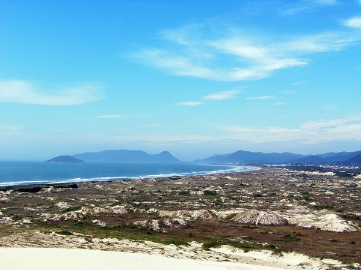
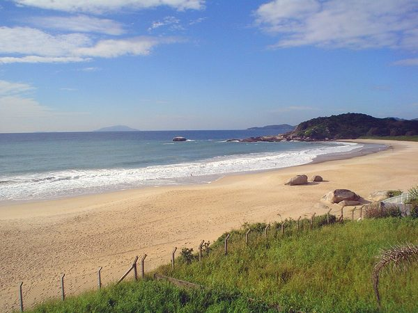
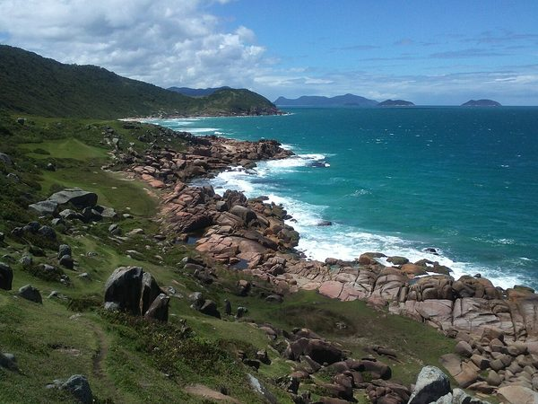
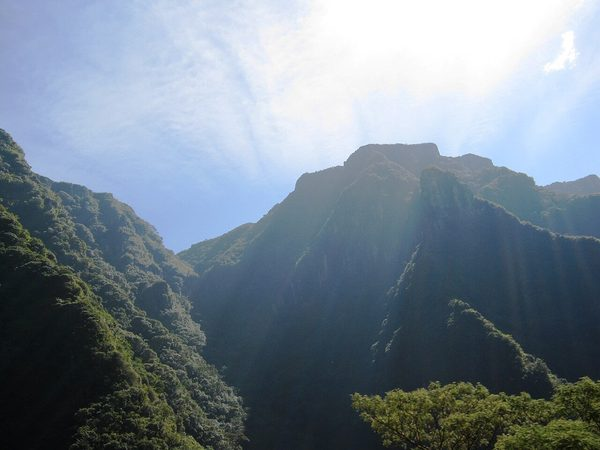
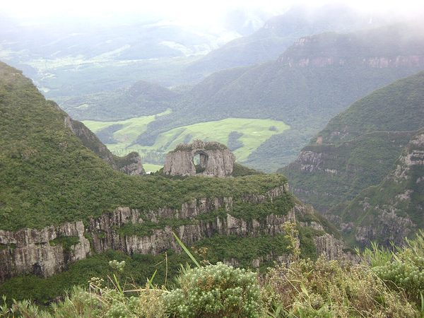
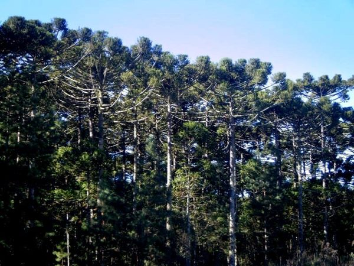
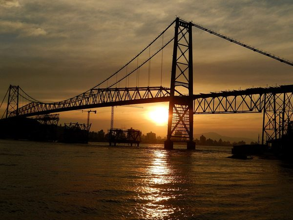
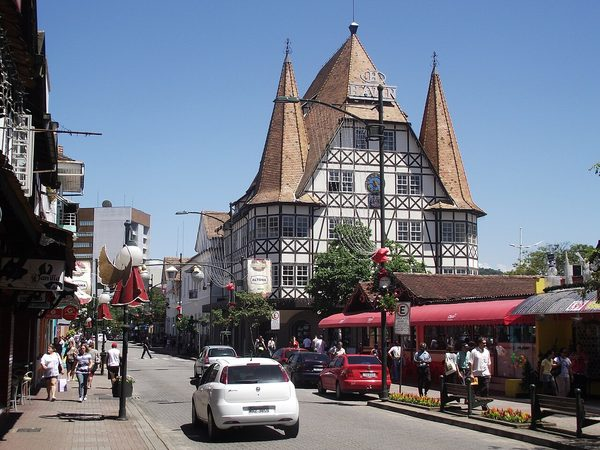
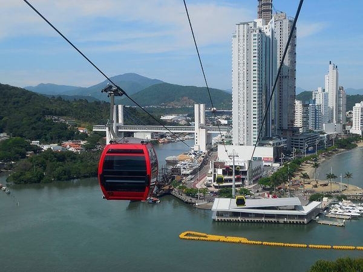
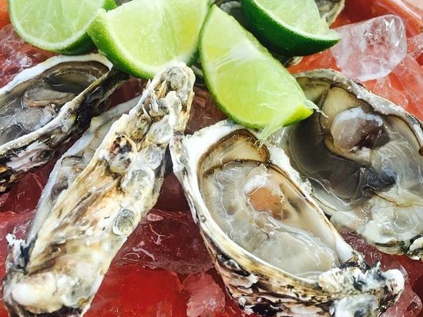
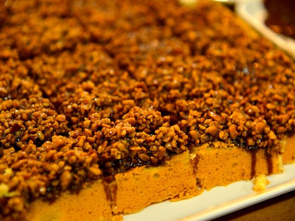
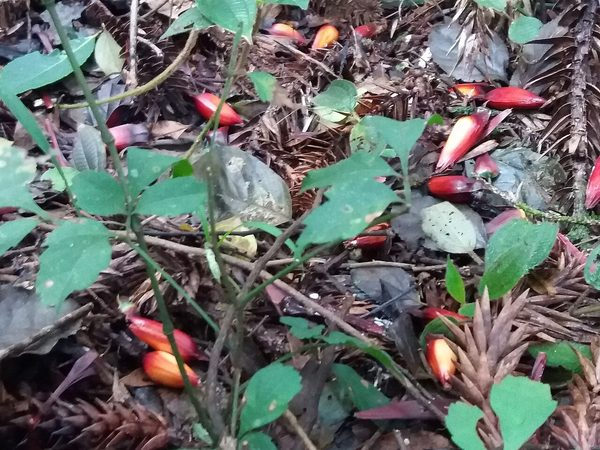
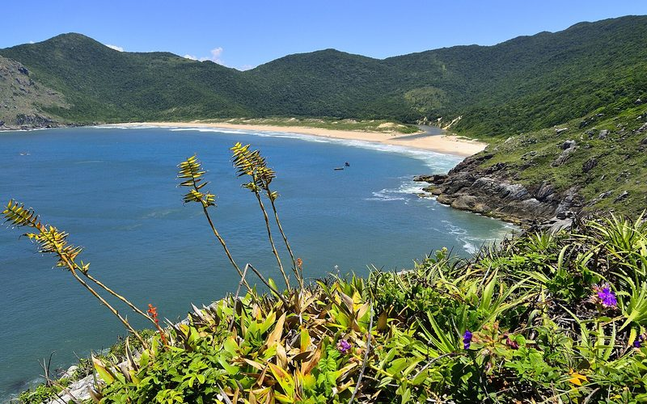
VerãoDe Bombinhas a Garopaba, passando por Florianópolis: praias urbanas, enseadas de água clara e trilhas até praias sem acesso de carro.
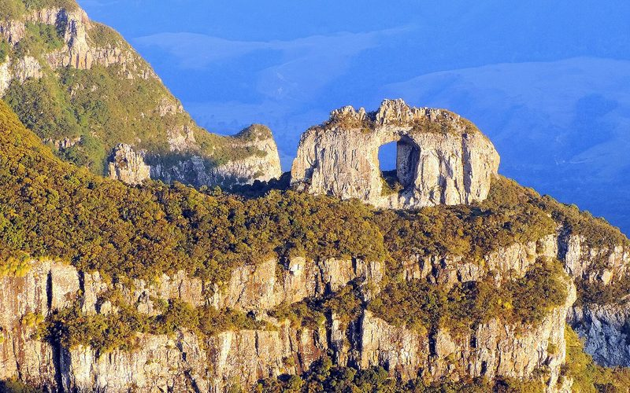
InvernoLages, Urubici, São Joaquim e a descida da Serra do Rio do Rastro: cânions, cachoeiras, vinícolas de altitude e a chance de ver neve.
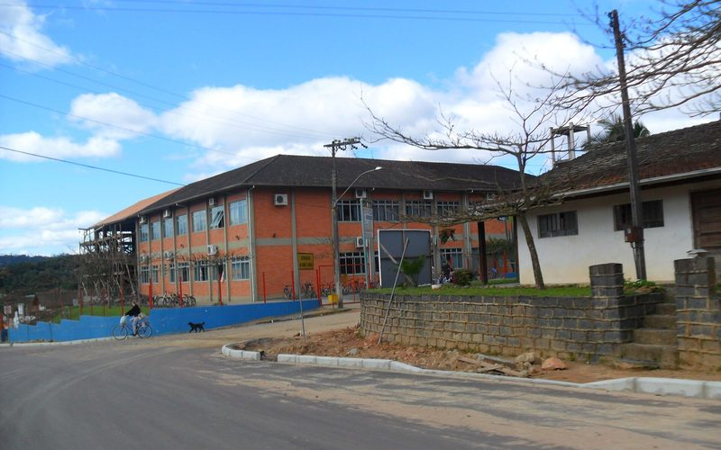
Ano inteiroBlumenau, Pomerode, Timbó e Rio dos Cedros: rota do enxaimel, cervejarias artesanais, cafés coloniais e ciclovias entre colônias.